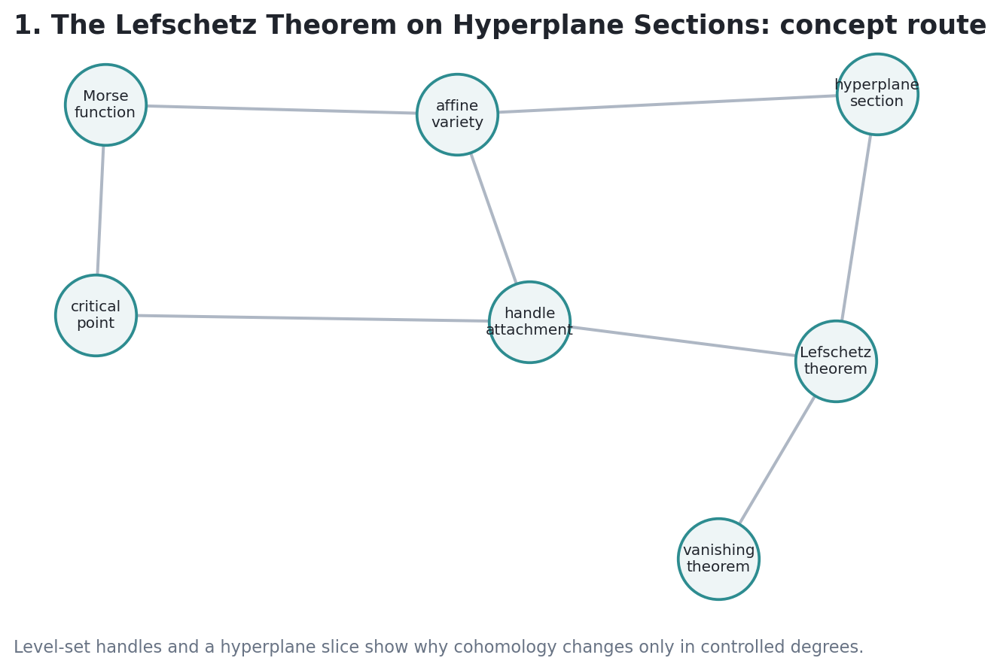

Volume II, Chapter 1: Topological geometry of algebraic varieties via Morse handles and hyperplane intersections.
Prose & Computational Grounding:
01-the-lefschetz-theorem-on-hyperplane-sections.ipynbv2-c01-lecture.html
Our roadmap is visual-first: define the local Morse model, track sublevel handle attachments, bound the indices algebraically, and check the global restriction maps on Betti grids.
A critical point \(p\) of a smooth function \(f: M \to \mathbb{R}\) is **nondegenerate** if the Hessian matrix of second-order partial derivatives is invertible: $$\det\left( \frac{\partial^2 f}{\partial x_i \partial x_j}(p) \right) \neq 0$$
Near a nondegenerate critical point \(p\), there exists a local coordinate system \((u_1, \dots, u_m)\) centered at \(p\) such that the function is strictly quadratic: $$f(u) = f(p) - \sum_{i=1}^\lambda u_i^2 + \sum_{j=\lambda+1}^m u_j^2$$ where \(\lambda\) is the **Morse index** of \(f\) at \(p\).
The index \(\lambda\) counts the maximum dimension of a subspace on which the Hessian is negative definite. Geometrically, it measures the number of independent directions in which the function values decrease as we move away from \(p\).
We analyze the topology of a manifold \(M\) by studying the family of sublevel sets: $$M^c = \{x \in M \mid f(x) \le c\}$$ As \(c\) varies, the topology of \(M^c\) remains unchanged as long as \(c\) does not cross a critical value.
Attaching a \(\lambda\)-handle is homotopically equivalent to attaching a cell \(e^\lambda\) of dimension \(\lambda\). Homologically, this means: $$H_r(M^{c+\epsilon}) \cong H_r(M^{c-\epsilon}) \quad \text{for } r < \lambda$$
If \(f\) has a single nondegenerate critical point \(p\) of index \(\lambda\) in the interval \([c-\epsilon, c+\epsilon]\), then the sublevel set \(M^{c+\epsilon}\) is diffeomorphic to \(M^{c-\epsilon}\) with a \(\lambda\)-handle attached: $$M^{c+\epsilon} \cong M^{c-\epsilon} \cup_{S^{\lambda-1} \times D^{m-\lambda}} \left( D^\lambda \times D^{m-\lambda} \right)$$
Let \(U \subset \mathbb{C}^N\) be a smooth affine algebraic variety of complex dimension \(n\) (real dimension \(2n\)). Let \(f_p(z) = \|z - p\|^2\) be the Euclidean distance function to a generic point \(p \in \mathbb{C}^N\).
For a generic point \(p\), the distance function \(f_p\) restricted to \(U\) is a Morse function, and **every** critical point has index: $$\lambda \le n$$ where \(n\) is the complex dimension of \(U\).
On a complex manifold, the complex Hessian of a plurisubharmonic function (like the distance function) has at least \(n\) positive eigenvalues at any point. Because the index counts negative eigenvalues, the number of negative directions cannot exceed the remaining \(n\) directions. Hence, \(\lambda \le n\).
This bound implies that any smooth affine variety \(U\) of complex dimension \(n\) is homotopically equivalent to a cell complex of dimension **at most** \(n\).
Let \(U = X \setminus Y\) be the open complement. Since \(Y\) is a hyperplane section, \(U\) is a smooth affine variety of dimension \(n\). Homotopically, \(U\) is a cell complex of dimension \(\le n\). By duality: $$H^r(X, Y; \mathbb{Z}) \cong H_{2n-r}(U; \mathbb{Z}) = 0 \quad \text{for } r < n$$
The long exact sequence of the pair \((X, Y)\) translates this vanishing immediately into isomorphism and injection ranges for the restriction map.
Let \(X\) be a smooth complex projective variety of dimension \(n\), and \(Y \subset X\) a smooth hyperplane section. Then: $$H^r(X, Y; \mathbb{Z}) = 0 \quad \text{for } r < n$$ The restriction map \(i^*: H^r(X; \mathbb{Z}) \to H^r(Y; \mathbb{Z})\) is: - an **isomorphism** for \(r < n - 1\) - a **monomorphism (injection)** for \(r = n - 1\)
For any homological cycle \(\gamma\) of dimension \(r < n\), we can continuously deform it within \(X\) until its support lies entirely inside the hyperplane section \(Y\).
The open variety \(U = X \setminus Y\) is affine, meaning it is topologically "too thin" to support independent homology classes in degrees less than \(n\). This is why the intersection \(Y\) acts as a complete homological representation of the parent variety \(X\).
For a toy algebraic projective surface \(X\) of dimension \(n=2\), the verified Betti numbers are:
| Degree \(r\) | Betti Number \(b_r\) | Hodge Decomposition \(h^{p,q}\) |
|---|---|---|
| 0 | 1 | \(h^{0,0} = 1\) |
| 1 | 0 | \(h^{1,0} = 0, \quad h^{0,1} = 0\) |
| 2 | 7 | \(h^{2,0} = 1, \quad h^{1,1} = 5, \quad h^{0,2} = 1\) |
| 3 | 0 | \(h^{3,0} = 0, \dots\) |
| 4 | 1 | \(h^{2,2} = 1\) |
The Betti sequence matches the Lefschetz hyperplane requirements exactly. For a smooth surface section \(Y\), the injection on \(H^1(X) \to H^1(Y)\) holds vacuously, while the isomorphism on \(H^0(X) \to H^0(Y)\) is confirmed since both are connected and have \(b_0 = 1\).